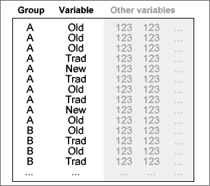
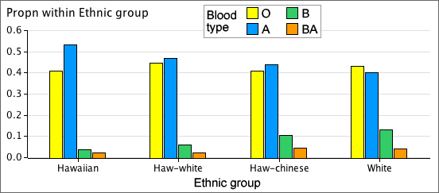
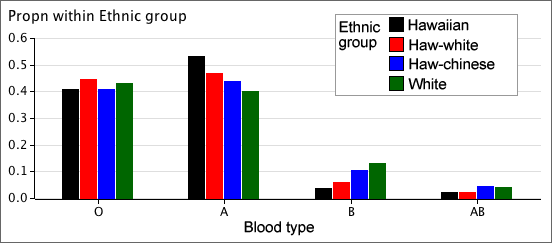
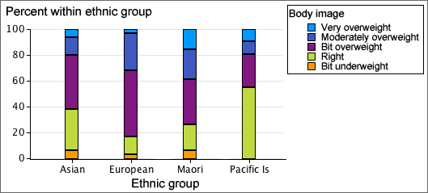
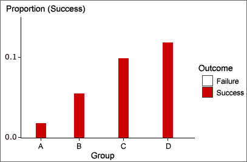

If you don't want to print now,
We are often interested in whether a categorical distribution is the same in two or more groups of individuals. The categorical data in each group can be expressed as a frequency table. Combining these frequency tables into a single rectangular array gives a contingency table.
Categorical variables and groups
The raw data may be a list of values from each of several groups (as above) or the groups may be specified by a categorical variable in a single data matrix.

A contingency table may arise from an experiment (where one variable is controlled by the experimentor) or a survey (where there is no control over the individuals).
Example (from experiment)
To test whether vitamin C reduces the risk of catching a cold, a 1961 French study involved 279 skiers over two periods of 5-7 days. Skiers in one group of 139 were given 1 gram ascorbic acid (vitamin C) per day whereas those in the other group were given a tablet that looked similar but had no active ingredient (called a placebo). None of the skiers knew which of the treatments they had received.
| Cold | No cold | |
|---|---|---|
| Ascorbic acid | 17 | 122 |
| Placebo | 31 | 109 |
Example (from survey)
A health survey was conducted in the UK in 2000. The contingency table below gives the main reason for not using contraception by the 410 women aged 16-49 who were in a sexual relationship, not using contraception and not sterilised.
| Age | |||
|---|---|---|---|
| 16-29 | 30-39 | 40-49 | |
| Partner sterilised | 6 | 81 | 127 |
| Wants to become pregnant | 12 | 28 | 11 |
| Pregnant now | 15 | 20 | 2 |
| Menopause | 0 | 2 | 11 |
| Possibly infertile | 6 | 18 | 19 |
| Doesn't like contraception | 3 | 7 | 6 |
| Other reason | 15 | 8 | 13 |
Proportions within groups
To compare the distributions of a categorical variable in different groups, it is best to examine the proportions within the groups — the cell frequencies divided by their group totals.
In a study of racial differences in blood types, 145,057 blood specimens from the Blood Bank of Hawaii were tested.
| Blood type | |||||
|---|---|---|---|---|---|
| Ethnic group | O | A | B | AB | Total |
| Hawaiian | 01,903 | 02,490 | 00,178 | 0,099 | 4,670 |
| Hawaiian-white | 04,469 | 04,671 | 00,606 | 0,236 | 9,982 |
| Hawaiian-chinese | 02,206 | 02,368 | 00,568 | 0,243 | 5,385 |
| White | 53,759 | 50,008 | 16,252 | 5,001 | 125,020 |
From the table of within-group percentages below, it is clearer that blood groups B and AB are rarer for Hawaiians and Hawaiian-whites than for the other ethnic groups.
| Blood type | |||||
|---|---|---|---|---|---|
| Ethnic group | O | A | B | AB | Total |
| Hawaiian | 40.7 | 53.3 | 03.8 | 02.1 | 100.0 |
| Hawaiian-white | 44.8 | 46.8 | 06.1 | 02.4 | 100.0 |
| Hawaiian-chinese | 41.0 | 44.0 | 10.5 | 04.5 | 100.0 |
| White | 43.0 | 40.0 | 13.0 | 04.0 | 100.0 |
Bar charts of proportions
Bar charts can be used to graphically compare groups and it is again best to use proportions within groups rather than raw frequencies, especially if the groups are of different sizes.

Clustering the bars
Each cluster of bars above is a valid bar chart for one group. Alternatively, the same bars can be clustered by the variable of interest:

This makes it easier to make comparisons between the groups.
Stacking the bars
The bars for each group in a bar chart can be stacked to help make comparisons between the groups. Stacked bar charts are particularly effective when the categorical variable is ordinal (has categories that can be meaningfully ordered).
The diagram below is a stacked bar chart showing the results from a questionnaire in New Zealand about women's ratings of their own body size. The 246 women all had similar body-mass index and were a little lighter than average for their height.

It is clear from this bar chart that there were more Europeans in the study than in the other ethnic groups. By stacking the proportions within groups, this information is lost but it is easier to see that a bigger proportion of Europeans believe they are overweight than the other groups.

Time series
When sets of categorical measurements are recorded at successive times, time can be treated as a grouping variable.

The diagram below shows the increasing percentage of True values.

Binary variables
When the variable of interest can only take two possible values, it is called a binary variable. If the proportions in each group for one of these values are small, the bars for this category can be shown with an expanded vertical scale — no information is lost since the proportions in the other category are one minus them.

Tables from spreadsheets
Never publish tables in which all values are boxed (the default format for tables produced by many spreadsheets). Consider using a bold typeface for headings or using extra white space to separate rows and columns as an alternative to lines.
| Reason | No. | % |
| Needle/Surg. Injuries | 279 | 0.2 |
| Rape | 1502 | 0.8 |
| TB | 1564 | 0.9 |
| STI | 2745 | 1.5 |
| Med Exam | 4717 | 2.6 |
| Clinical Suspicion | 15387 | 8.5 |
| PMTCT | 45590 | 25.0 |
| VCT | 102443 | 56.3 |
| Other | 7825 | 4.3 |
The table below presents the data more effectively.
| Reason | No. | % |
| Needle/Surg. Injuries | 279 | .2 |
| Rape | 1,502 | .8 |
| TB | 1,564 | .9 |
| STI | 2,745 | 1.5 |
| Med Exam | 4,717 | 2.6 |
| Clinical Suspicion | 15,387 | 8.5 |
| PMTCT (pregnancy) | 45,590 | 25.0 |
| VCT (voluntary) | 102,443 | 56.3 |
| Other | 7,825 | 4.3 |
Large tables
In large tables, it can be difficult to read across rows. To help the eye to match values on the same line, hairlines can be drawn between occasional rows, or some rows can be printed on a very light grey background.
Layout
Think carefully about how to arrange the rows and columns. Values that we want to compare should be close to each other, ideally in a column. Judicious use of white space can help to show the structure of complex tables.

The layout above has little structure. The table below contains the same information but is easier to understand.

Annotation
When a table is included in a report, the main information that can be gained from the table should also be summarised in the body of the report in words.
Do not simply repeat the values in the table. The annotation should summarise and interpret.
Signal and noise
The useful information in a graphical or tabular display of data is called its signal. Parts of the display that do not contain information that can be usefully interpreted are called noise. We can distinguish:
Noise make it harder to detect the signal in a display and should be avoided.
Significant digits
Many tables contain values that are reported with more significant digits than necessary. Usually the pattern of values in a table can be understood from only their first 2 or 3 digits — the remaining digits are data noise.
| June 2006 | June 2005 | June 2004 | |||
|---|---|---|---|---|---|
| Total | % variation from prev year | Total | % variation from prev year | Total | |
| Cars | 2,232,915 | 2.00 | 2,189,187 | 3.35 | 2,118,240 |
| Rental cars | 21,754 | -3.76 | 22,604 | 2.15 | 22,128 |
| Taxis | 8,011 | -1.97 | 8,172 | 1.03 | 8,089 |
| Trucks | 408,757 | 2.23 | 399,843 | 3.51 | 386,295 |
| Buses/coaches | 16,486 | 5.20 | 15,671 | 4.95 | 14,932 |
| Trailers/caravans | 420,289 | 2.76 | 408,982 | 2.99 | 397,113 |
| Motorcycles | 43,513 | 15.37 | 37,717 | 8.16 | 34,873 |
| Mopeds | 14,171 | 37.82 | 10,282 | 19.32 | 8,617 |
| Tractors | 27,124 | 2.27 | 26,521 | 4.91 | 25,279 |
| Exempt vehicles | 11,130 | 7.77 | 10,328 | 6.39 | 9,708 |
| Miscellaneous | 22,464 | 7.25 | 20,946 | 9.06 | 19,206 |
| Total | 3,226,614 | 2.42 | 3,150,253 | 3.47 | 3,044,480 |
Reducing the number of significant digits and rearranging the columns makes the information easier to understand.
| Number in June (thousand) | Percentage change | |||||
|---|---|---|---|---|---|---|
| 2006 | 2005 | 2004 | 2005-6 | 2004-5 | ||
| Cars | 2,233 | 2,189 | 2,118 | 2.0 | 3.4 | |
| Rental cars | 22 | 23 | 22 | -3.8 | 2.2 | |
| Taxis | 8 | 8 | 8 | -2.0 | 1.0 | |
| Trucks | 409 | 400 | 386 | 2.2 | 3.5 | |
| Buses/coaches | 17 | 16 | 15 | 5.2 | 5.0 | |
| Trailers/caravans | 420 | 409 | 397 | 2.8 | 3.0 | |
| Motorcycles | 44 | 38 | 35 | 15.4 | 8.2 | |
| Mopeds | 14 | 10 | 9 | 37.8 | 19.3 | |
| Tractors | 27 | 27 | 25 | 2.3 | 4.9 | |
| Exempt vehicles | 11 | 10 | 10 | 7.8 | 6.4 | |
| Miscellaneous | 22 | 21 | 19 | 7.3 | 9.1 | |
| All licensed vehicles | 3,227 | 3,150 | 3,044 | 2.4 | 3.5 | |
Percentages and proportions
It is often easier to understand proportions (or percentages) than raw counts. This is particularly important for comparing groups of individuals. The table below shows the origin and 'lifestage' of tourists (in thousands) arriving in Hawaii in 2005.
| US West | US East | Japan | Canada | Europe | |
| Wedding/honeymoon | 103.1 | 110.0 | 192.7 | 8.0 | 131.5 |
| Family (with children) | 667.1 | 297.1 | 485.6 | 44.5 | 94.4 |
| Young (18-34) | 403.3 | 243.1 | 229.1 | 38.8 | 210.1 |
| Middle aged (35-54) | 955.2 | 634.7 | 308.0 | 75.1 | 374.2 |
| Seniors (55+) | 903.7 | 643.5 | 303.5 | 82.3 | 314.6 |
| Total | 3,032.5 | 1,929.3 | 1,517.4 | 248.6 | 1,123.7 |
The information is easier to understand as percentages within each country of origin. Scanning across rows in the table below, the highlighted percentages stand out as 'unusual'.
| US West | US East | Japan | Canada | Europe | |
| Wedding/honeymoon | 3.4 | 5.7 | 12.7 | 3.2 | 11.7 |
| Family (with children) | 22.0 | 15.4 | 32.0 | 17.9 | 8.4 |
| Young (18-34) | 13.3 | 12.6 | 15.1 | 15.6 | 18.7 |
| Middle aged (35-54) | 31.5 | 32.9 | 20.3 | 30.2 | 33.3 |
| Seniors (55+) | 29.8 | 33.3 | 20.0 | 33.1 | 28.0 |
| Total | 100.0 | 100.0 | 100.0 | 100.0 | 100.0 |
Ratios
It is sometimes better to divide values by some measure of 'size' before analysis or display.
Comparing values down columns
It is easiest to compare values if they are close together in a table. The layout and use of white space should be used to encourage comparison of related values.
In particular, it is easier to compare values down columns than across rows — their most significant digits are closer — so carefully consider whether to swap the rows and columns of a table.
Order for the rows of a table
In many tables, the rows are ordered alphabetically by their row names, but it is usually better to reorder them in another meaningful way.
If there is no better ordering, sort the rows into decreasing order of the values in the column of most interest.
Tourist arrivals in South Africa
The following table was published as part of a report on tourism in South Africa. It describes the origin of tourist arrivals in 2004 and the amounts that they spent in South Africa (excluding capital expenditure).
| Average spend in SA | Number of arrivals | ||
|---|---|---|---|
| ALL FOREIGN TOURISTS | R 7,920 | 6,677,839 | R 43,220,861,797 |
| AFRICA & MIDDLE EAST | R 7,333 | 4,673,724 | R 27,572,457,398 |
| Angola | R 9,561 | 28,543 | R 272,899,623 |
| Botswana | R 3,678 | 802,715 | R 2,952,385,770 |
| Kenya | R 7,235 | 19,549 | R 141,437,015 |
| Lesotho | R 2,629 | 1,470,953 | R 3,867,135,437 |
| Malawi | R 7,164 | 89,205 | R 639,064,620 |
| Mozambique | R 20,990 | 355,840 | R 7,469,081,600 |
| Namibia | R 6,141 | 225,882 | R 1,387,141,362 |
| Nigeria | R 8,091 | 23,441 | R 189,661,131 |
| Swaziland | R 3,754 | 849,176 | R 3,187,806,704 |
| Tanzania | R 11,474 | 10,991 | R 126,110,734 |
| Zambia | R 7,186 | 121,384 | R 872,265,424 |
| Zimbabwe | R 7,702 | 551,113 | R 4,244,672,326 |
| Unspecified | R 8,043 | 151,432 | R 1,217,967,576 |
| Other Africa and Middle East | R 8,043 | 124,932 | R 1,004,828,076 |
| AMERICAS | R 8,838 | 290,625 | R 2,281,015,481 |
| Brazil | R 7,561 | 21,137 | 159,816,857 |
| Canada | R 8,281 | 37,170 | R 307,804,770 |
| USA | R 7,872 | 208,159 | R 1,638,627,648 |
| Other Americas | R 7,234 | 24,159 | R 174,766,206 |
| ASIA & AUSTRALASIA | R 8,331 | 275,001 | R 2,328,135,275 |
| Australia | R 8,867 | 75,675 | R 671,010,225 |
| China (including Hong Kong) | R 9,567 | 51,080 | R 488,682,360 |
| India | R 8,834 | 36,172 | R 319,543,448 |
| Japan | R 6,555 | 23,091 | R 151,361,505 |
| Other Asia and Australasia | R 7,839 | 88,983 | R 697,537,737 |
| EUROPE | R 8,480 | 1,287,057 | R 11,039,253,643 |
| France | R 6,647 | 109,276 | R 726,357,572 |
| Germany | R 8,824 | 245,452 | R 2,165,868,448 |
| Italy | R 7,496 | 50,429 | R 378,015,784 |
| Netherlands | R 8,199 | 120,838 | R 990,750,762 |
| Sweden | R 9,017 | 32,247 | R 290,771,199 |
| UK | R 8,956 | 456,368 | R 4,087,231,808 |
| Other Europe | R 8,810 | 272,447 | R 2,400,258,070 |
This table can be improved by removing grid lines, decreasing the number of significant digits, and reordering the countries within each region.
| Arrivals (000) |
Total expenditure (R 000,000) |
Average spend (R 000) |
|
| ALL FOREIGN TOURISTS | 6,678 | 43,221 | 7.9 |
| AFRICA & MIDDLE EAST | 4,674 | 27,572 | 7.3 |
| Lesotho | 1,471 | 3,867 | 2.6 |
| Swaziland | 849 | 3,188 | 3.8 |
| Botswana | 803 | 2,952 | 3.7 |
| Zimbabwe | 551 | 4,245 | 7.7 |
| Mozambique | 356 | 7,469 | 21.0 |
| Namibia | 226 | 1,387 | 6.1 |
| Zambia | 121 | 872 | 7.2 |
| Malawi | 89 | 639 | 7.2 |
| Angola | 29 | 273 | 9.6 |
| Nigeria | 23 | 190 | 8.1 |
| Kenya | 20 | 141 | 7.2 |
| Tanzania | 11 | 126 | 11.5 |
| Unspecified | 151 | 1,218 | 8.0 |
| Other Africa and Middle East | 125 | 1,005 | 8.0 |
| EUROPE | 1,287 | 11,039 | 8.5 |
| UK | 456 | 4,087 | 9.0 |
| Germany | 245 | 2,166 | 8.8 |
| Netherlands | 121 | 991 | 8.2 |
| France | 109 | 726 | 6.6 |
| Italy | 50 | 378 | 7.5 |
| Sweden | 32 | 291 | 9.0 |
| Other Europe | 272 | 2,400 | 8.8 |
| AMERICAS | 291 | 2,281 | 8.8 |
| USA | 208 | 1,639 | 7.9 |
| Canada | 37 | 308 | 8.3 |
| Brazil | 21 | 160 | 7.6 |
| Other Americas | 24 | 175 | 7.2 |
| ASIA & AUSTRALASIA | 275 | 2,328 | 8.3 |
| Australia | 76 | 671 | 8.9 |
| China (including Hong Kong) | 51 | 489 | 9.6 |
| India | 36 | 320 | 8.8 |
| Japan | 23 | 151 | 6.6 |
| Other Asia and Australasia | 89 | 698 | 7.8 |